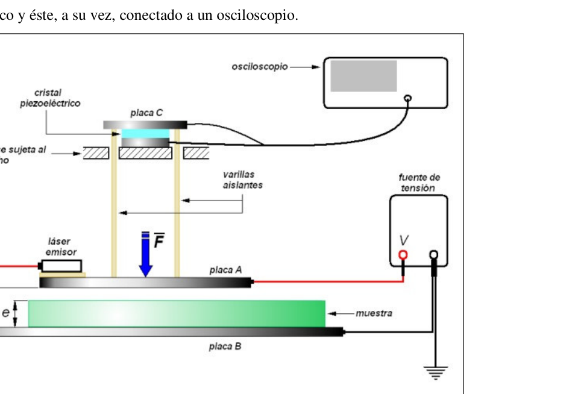
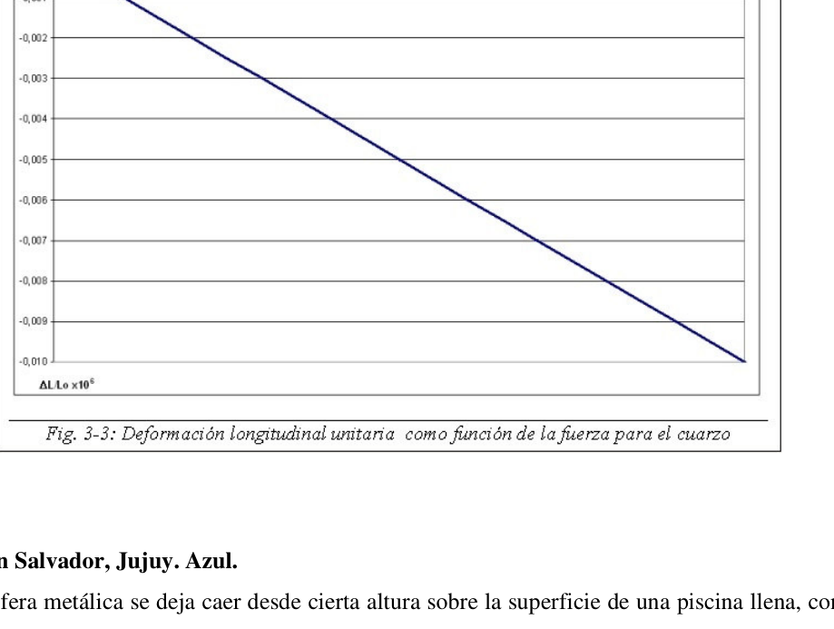

Dielectrico ruso (electrometro de Kelvin)
- Ciudad de Buenos Aires. Verde. Российская ДИЭЛЕКТРИК (dieléctrico ruso) En el departamento de física de la Universidad de Moscú funciona el laboratorio Lev Landau (Nobel de física 1962) que desarrolla tareas de investigación referentes a materiales dieléctricos. Allí los estudiantes utilizan un electrómetro absoluto de Kelvin, ligeramente modificado, para determinar la constante dieléctrica de aislantes sólidos. A tal fin se mecanizan con elevada precisión las muestras a ensayar, que consisten en placas en forma de paralelepípedo con un espesor e . El electrómetro puede verse en la figura 3-1. La placa metálica A tiene una superficie S y se conecta, mediante un cable de masa despreciable, al terminal positivo de una fuente de tensión continua de alta estabilidad. La placa se encuentra unida mediante unas varillas aislantes a un sensor piezoeléctrico y éste, a su vez, conectado a un osciloscopio.
La placa metálica B, paralela a la placa A, sirve de base al electroscopio. Sobre ella descansa la
muestra de material dieléctrico a ensayar y un fotorreceptor. Esta placa se conecta al terminal
negativo de la fuente, el cual se encuentra puesto a tierra.
Un láser sobre la placa A emite un haz de luz que es captado por el fotorreceptor. Cuando esto
ocurre, se enciende una lámpara testigo y entonces se tiene la certeza de que las placas A y B se
encuentran perfectamente niveladas, paralelas y separadas por una distancia d .
Las placas A y B forman un capacitor. Un capacitor de placas paralelas es un elemento capaz de
acumular energía en forma de campo eléctrico. Si las placas se encuentran separadas una
distancia d en el vacío, la capacidad del elemento está dada por:
d
S
C
⋅
0 0 ε
donde S es el área efectiva (ver figura 3-2) y 0 ε es la permitividad del vacío.
Si el espacio entre las placas se llena completamente con un material dieléctrico de constante dieléctrica k , la capacidad del capacitor C resulta ser: 0 C k C ⋅
Si entre la muestra a ensayar y la placa A hay aire, demuestre que la capacitancia entre las placas A y B está dada por ( )1 0 − ⋅ − ⋅ ⋅ ⋅
k e d k S k C ε
Cuando entre las placas A y B se aplica una diferencia de potencial V , las placas se cargan cada una con cargas de signo opuesto y, en virtud de la ley de Coulomb, aparece una fuerza entre ellas. 2) Demuestre que la magnitud de la fuerza F ρ que se ejerce sobre la placa A es ( ) [ ] 1 2 2 0 − ⋅ − ⋅ ⋅ ⋅ ⋅ ⋅ ⋅
k e d k d V S k F ε
En uno de los ensayos el fotorreceptor se coloca de modo que 3 e e d
− y se ensaya una muestra cuya constante dieléctrica es k . Tomando como referencia la placa B, 0 ; 0
= B B y V . 3.a) Trace un grafico ) (y f V = del potencial en función de la distancia a la placa B para la región comprendida entre ambas placas, si el potencial de la placa A es A V .
3.b) A partir de la gráfica explique cómo puede determinarse la magnitud del campo eléctrico medio entre las placas y compare los campos eléctricos en las dos regiones presentes. Datos del ensayo: cm e 20 ,1
, V VA 100
; 6
k ; superficie de la placa A: 2 900cm S A =
El efecto piezoeléctrico es un fenómeno físico por el cual aparece una diferencia de potencial
eléctrico entre las caras de ciertos cristales cuando éstos se someten a una presión mecánica. El
efecto funciona también a la inversa.
Cuando sobre la placa A aparece la fuerza F
ρ
, ésta se transmite a través de las varillas aislantes
y, mediante la placa metálica C, comprime un cristal piezoeléctrico que descansa sobre otra
placa metálica la cual, a su vez, se apoya sobre una base sujeta rígidamente al techo. El cristal y
las placas que lo comprimen forman el sensor piezoeléctrico.
La compresión de la pastilla piezoeléctrica determina la aparición de una diferencia de potencial
U
∆
entre las placas que la contienen. Esta señal es tomada mediante las puntas del osciloscopio
y en la pantalla de éste puede visualizarse el nivel de tensión correspondiente.
Llamando η a la deformación longitudinal unitaria del cerámico piezoeléctrico, puede
demostrarse que, dentro de ciertos límites, el comportamiento electromecánico del
piezoeléctrico responde a la ecuación:
Y
A
F
E
L
L
⋅
−
⋅
∆
λ η 0
donde E es la magnitud del campo eléctrico uniforme en el interior del piezoeléctrico,
0
L es la
longitud de éste último en la dirección del campo y sin carga mecánica, λ es la constante
piezoeléctrica del material, F es la magnitud de la fuerza aplicada longitudinalmente (en la
dirección del campo), A es la sección de la pastilla piezoeléctrica, transversal al campo, e Y es
el módulo de Young del cristal.
El sensor piezoeléctrico del electrómetro está constituido por una pastilla cilíndrica de cuarzo de
cm
20
,1
de diámetro y
mm
00
,1
de espesor.
4)
Si la tensión de salida de la fuente se fija en
V
3200
y el material dieléctrico se
reemplaza por otro, de iguales dimensiones, cuya constante dieléctrica es
80
k , determine el valor de tensión U ∆ de la señal que se observará en la pantalla del osciloscopio.
Datos: 2 2 12 0 10 85 ,8 C m N ⋅ ×
− ε
1
aire k
El módulo de Young del cuarzo es 2 10 10 6,5 m N YC ×
La constante piezoeléctrica del cuarzo es N pC C 3,2
λ . La respuesta electromecánica del cuarzo se muestra en la figura 3-3.


Topic: Electrostatics Metodi: Coulomb’s Law, Electric Potential Method, Stress-Strain Analysis Competenze: Physical Reasoning, Mathematical Modeling Objects: Capacitor Fonte: Testo (PDF) — p.1
**Dielettrico russo (elettrometro di Kelvin) **
- Città di Buenos Aires. Verde. ROSSIANNA DIEELEKTRIK (dielettrico russo) Nel dipartimento di fisica dell’Università di Mosca si opera il laboratorio Lev Landau. (Nobel di fisica 1962) che svolge attività di ricerca relative ai materiali dielettrici. Lì gli studenti usano un elettrometro assoluto di Kelvin, leggermente modificato, per determinare la costante dielettrica dei solidi isolanti. Per questo si meccanizzano con elevata Precisione dei campioni da testare, che consistono di schede in forma di parallelepiedo con un spessore e . L’elettrometro può essere visto nella figura 3-1. La scheda metallica A ha una superficie S e si collegare, mediante un cavo di massa scarsa, al terminale positivo di una fonte di tensione continua ad avere una elevata stabilità. La placca è legata da bastoni isolanti a una Il sensore piezoelettrico e questo, a sua volta, collegato ad un osciloscopio.
La scheda metallica B, parallela alla scheda A, serve da base all’elettroscopo. Su di essa riposa la campione di materiale dielettrico da testare e un fotorecepitore. Questa targa si collega al terminale Negativo della fonte, che è messa a terra. Un laser sulla placca A emette un raggio di luce che viene catturato dal fotorecepitore. Quando questo Si accende una lampada testimone e poi si è sicuri che le placche A e B sono trovano perfettamente livellati, paralleli e separati da una distanza d. Le placche A e B formano un capacitore. Un capacitore a plache parallele è un elemento capace di accumulare energia sotto forma di campo elettrico. Se le targhe sono separate una Distanza d in vuoto, la capacità dell’elemento è data da: d S C ⋅
0 0 ε
L’area di riferimento è la superficie di riferimento (fig. 3-2). 0 ε è la permissività del vuoto.
Se lo spazio tra le plache si riempie completamente di un materiale dielettrico di costante dielettrico k , la capacità del condensatore C è: 0 C k C ⋅
Se tra il campione da provare e la scheda A c’è aria, dimostri che la capacità è di Le schede A e B sono date da ( )1 0 − ⋅ − ⋅ ⋅ ⋅
k e d k S k C ε
Quando si applica una differenza di potenziale V tra le schede A e B , le schede si caricano ognuna con carichi di segno opposto e, in base alla legge di Coulomb, appare una forza tra loro. 2) Dimostra che la forza F ρ che si esercita sulla scheda A è ( ) [ ] 1 2 2 0 − ⋅ − ⋅ ⋅ ⋅ ⋅ ⋅ ⋅
k e d k d V S k F ε
In uno dei test il fotorecepitore viene posizionato in modo che 3 e e d
− e si prova una. mostra la cui costante dielettrica è k . Prendendo come riferimento la scheda B, 0 ; 0
= B B y V . 3. (a) Tracciare un grafico ) (y f V = di potenziale a distanza dalla scheda B per la la regione compresa tra le due placche, se il potenziale della placca A è A V .
3.b) Sulla base del grafico, spiegare come si può determinare la grandezza del campo La media elettrica tra le plache e la comparazione dei campi elettrici nelle due regioni Presente. Dati del test: cm e 20 ,1
, V VA 100
; 6
k ; superficie della scheda A: 2 900cm S A =
L’effetto piezoelettrico è un fenomeno fisico per il quale appare una differenza di potenziale La pressione di un cristallo è un’energia elettrica che si trova tra le facce di alcuni cristalli quando questi vengono sottoposti a pressione meccanica. El Il suo effetto funziona anche al contrario. Quando sulla scheda A appare la forza F ρ , che si trasmette attraverso le bacche isolanti . e, con la piastra metallica C, comprime un cristallo piezoelettrico che riposa su un altro. una piastra metallica che, a sua volta, si appoggia su una base rigidamente attaccata al tetto. Il cristallo e le plache che lo compresso formano il sensore piezoelettrico. La compressione della compressa piezoelettrica determina l’apparenza di una differenza di potenziale U ∆ tra le placche che la contengono. Questo segnale viene preso con le punte dell’oscilloscopio e sullo schermo di questo si può vedere il livello di tensione corrispondente. Chiamando η alla deformazione longitudinale unitaria del ceramico piezoelettrico, può La Commissione ha inoltre dimostrato che, entro determinati limiti, il comportamento elettromeccanico del piezoelettrico risponde all’equazione: Y A F E L L ⋅ − ⋅
∆
λ η 0
dove E è la magnitudine del campo elettrico uniforme all’interno del piezoelettrico, 0 L es la L’intervallo di velocità di un’azione di velocità di un’azione di velocità di un’azione di velocità di un’azione di velocità di un’azione di velocità di un’azione di velocità di un’azione di velocità di un’azione di velocità di velocità di un’azione di velocità di velocità di un’azione di velocità di velocità di un’azione di velocità di velocità di velocità di un’azione di velocità di velocità di velocità di un velocità di velocità di velocità di velocità di un’azione di velocità di velocità di velocità di velocità di velocità di velocità di velocità di velocità di velocità di velocità di velocità di velocità di velocità di velocità di velocità di velocità di velocità di velocità di velocità di velocità di velocità di velocità di velocità di velocità di velocità di velocità di velocità di velocità di velocità di velocità di velocità di velocità di velocità di velocità di velocità di velocità di velocità di velocità di velocità di velocità di velocità di velocità di velocità di velocità di velocità di velocità di velocità di velocità di velocità di velocità di velocità di velocità di velocità di velocità di velocità di velocità di velocità di velocità di velocità di velocità di velocità di velocità di velocità di velocità di velocità di velocità di velocità di velocità di velocità di velocità di velocità di velocità di velocità di velocità di velocità di velocità di velocità di velocità di velocità di velocità di velocità di velocità di velocità di velocità di velocità di velocità di velocità di velocità di velocità di velocità di velocità di velocità di velocità di velocità di velocità di velocità di velocità di velocità di velocità di velocità di velocità di velocità di velocità di velocità di velocità di velocità di velocità di velocità di velocità di velocità di velocità di velocità di velocità di velocità di velocità di velocità di velocità di velocità di velocità di velocità di velocità di velocità di velocità di velocità di velocità di velocità di velocità F è la grandezza della forza applicata longitudinalmente (in direzione del campo), A è la sezione della compressa piezoelettrica, trasversale al campo, e Y è Il modulo Young del cristallo. Il sensore piezoelettrico dell’elettrometro è costituito da una compressa cilindrica di quarzo di cm 20 ,1 di diametro e mm 00 ,1 di spessore. 4) Se la tensione di uscita della sorgente è fissata a V 3200 e il materiale dielettrico si è sostituisce con un altro, di uguali dimensioni, la cui costante dielettrica è 80
k , determinare il valore di tensione U ∆ del segnale che verrà osservato sullo schermo dell’oscilloscopio.
Datati: 2 2 12 0 10 85 ,8 C m N ⋅ ×
− ε
1
aria k
Il modulo di Young del quarzo è 2 10 10 6,5 m N YC ×
La costante piezoelettrica del quarzo è N pC C 3,2
λ . La risposta elettromeccanica del quarzo è mostrata nella figura 3-3.
Topic: Electrostatics Metodi: Coulomb’s Law, Electric Potential Method, Stress-Strain Analysis Competenze: Physical Reasoning, Mathematical Modeling Objects: Capacitor Fonte: Testo (PDF) — p.1
The following table shows the results of the calculations:
- City of Buenos Aires. Green, please. The Commission has also adopted a proposal for a regulation on the protection of the environment. In the physics department of Moscow University there is the Lev Landau laboratory. (Physics Prize 1962) who develops research on dielectric materials. There students use a slightly modified absolute Kelvin electrometer to determine the dielectric constant of solid insulators. To this end they are highly mechanized Precision of the samples to be tested, consisting of parallel-piped plates with a thickness and . The electrometer can be seen in Figure 3-1. Metal plate A has a surface S and is connects, by means of a scant mass cable, to the positive terminal of a voltage source continuous high stability. The plate is joined by a pair of rods to insulate a Piezoelectric sensor and this one, in turn, connected to an oscilloscope.
The metal plate B, parallel to the plate A, serves as the electroscope’s base. On it rests the sample of dielectric material to be tested and a photoreceptor. This plate connects to the terminal. negative of the source, which is grounded. A laser on the A-plate emits a beam of light that is picked up by the photoreceptor. When this is happens, you turn on a witness lamp and then you’re sure that the A and B plates are They are perfectly level, parallel and separated by a distance d. Plaques A and B form a capacitor. A parallel plate capacitor is an element capable of accumulate energy in the form of an electric field. If the plates are separated one distance d in the vacuum, the capacity of the element is given by: d S C ⋅
0 0 ε
where S is the effective area (see Figure 3-2) and 0 ε is the permissibility of the vacuum.
If the space between the plates is completely filled with a constant dielectric material In the case of dielectric k , the capacitor C ‘s capacity is: 0 C k C ⋅
If air is present between the sample to be tested and plate A, prove that capacity is between Plaques A and B are given by ( )1 0 − ⋅ − ⋅ ⋅ ⋅
k e d k S k C ε
When a potential V difference is applied between plates A and B , the plates are charged Each with opposite sign loads and, under Coulomb’s law, a force appears. between them. 2) Prove that the magnitude of the force F ρ The amount of the test substance applied to plate A is ( ) [ ] 1 2 2 0 − ⋅ − ⋅ ⋅ ⋅ ⋅ ⋅ ⋅
k e d k d V S k F ε
In one of the tests the photoreceptor is placed so that 3 e e d
− And you try one. shows whose dielectric constant is k . Taking as a reference the B plate, 0 ; 0
= B B y V . 3. (a) Draw a chart ) (y f V = The potential for the distance to plate B for the region between the two plates, if the potential of plate A is A V .
3.b) Using the graph, explain how the magnitude of the field can be determined The average electrical power between the plates and the comparison of electric fields in the two regions present. Data from the test: cm e 20 ,1
, V VA 100
; 6
k ; surface of plate A: 2 900cm S A =
The piezoelectric effect is a physical phenomenon by which a potential difference appears. Electrical contact between the faces of certain crystals when they are subjected to mechanical pressure. El The effect is also reversed. When the force F appears on plate A ρ , this is transmitted through the insulating rods . and, using the metal plate C, compresses a piezoelectric crystal resting on another metal plate which, in turn, rests on a base rigidly attached to the ceiling. The glass and The plates that compress it form the piezoelectric sensor. The compression of the piezoelectric tablet determines the occurrence of a potential difference U ∆ between the plates that contain it. This signal is taken by the tips of the oscilloscope. and on the screen of this one you can see the corresponding voltage level. By calling η to the unit longitudinal deformation of piezoelectric ceramic, it can The results of the study showed that, within certain limits, the electromechanical behaviour of the piezoelectric answer to the equation: Y A F E L L ⋅ − ⋅
∆
λ η 0
where E is the magnitude of the uniform electric field inside the piezoelectric, 0 L es la The length of the latter in the direction of the field and without mechanical load, λ is the constant The material’s piezoelectrical force, F is the magnitude of the force applied longitudinally (in the direction of the field), A is the section of the piezoelectric tablet, cross-sectional to the field, and Y is Young’s module of the crystal. The piezoelectric sensor of the electrometer consists of a cylindrical quartz tablet of cm 20 ,1 of a diameter of mm 00 ,1 thickness. 4) If the output voltage of the source is fixed at V 3200 and the dielectric material is It replaces another, of equal dimensions, whose dielectric constant is 80
k , determine the voltage value U ∆ of the signal to be observed on the oscilloscope screen.
The data: 2 2 12 0 10 85 ,8 C m N ⋅ ×
− ε
1
Air k
Young’s quartz module is 2 10 10 6,5 m N YC ×
The piezoelectric constant of quartz is N pC C 3,2
λ . The electromechanical response of the quartz is shown in Figure 3-3.
Topic: Electrostatics Metodi: Coulomb’s Law, Electric Potential Method, Stress-Strain Analysis Competenze: Physical Reasoning, Mathematical Modeling Objects: Capacitor Fonte: Testo (PDF) — p.1